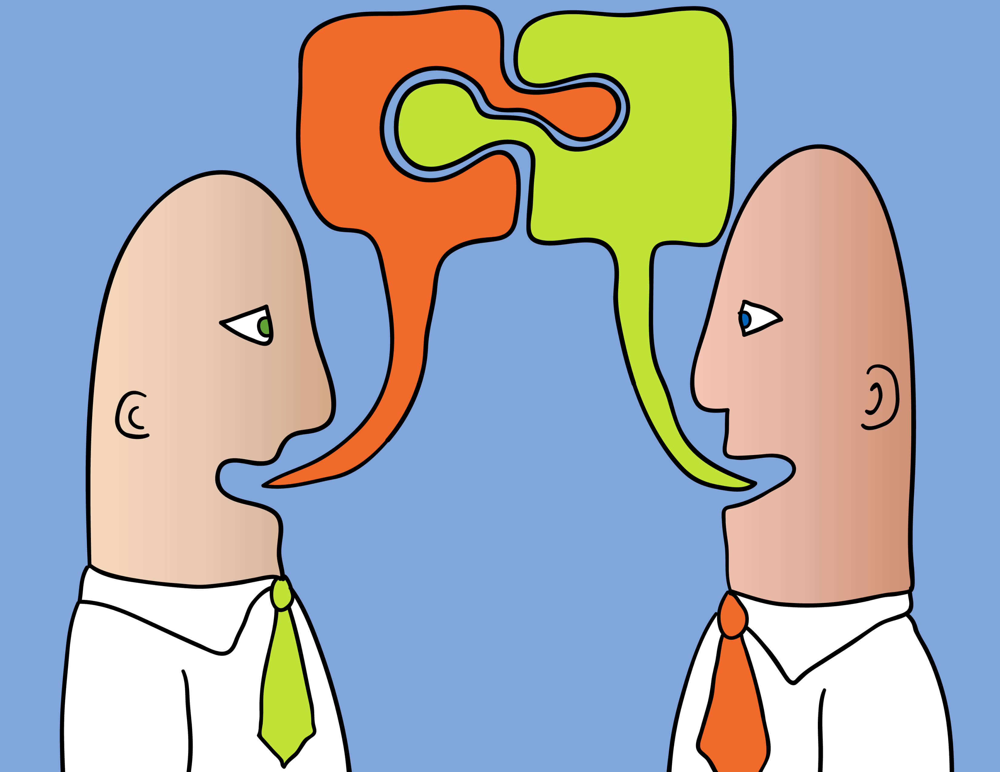

DEFINICIÓN
Estos autores definen a los signos de puntuación como...
Pilar Laura Benavente (2016)
Son signos gráficos que hacemos aparecer en los escritos para marcar las pausas necesarias que le den el sentido y el significado adecuado.
Estela García Cabrera (1998)
Son una parte importante para la total comprensión y correcta expresión del texto escrito. Con los diversos signos de puntuación se pretende reproducir la entonación que se utiliza en la lengua oral, es decir, cuando hablamos.
Estanislao Zuleta (1994)
Son aquellos que marcan pausas y tonos; unos son puramente pausas: el punto seguido, el punto aparte, la coma, el punto y coma; otros expresan tono: las interrogaciones y las exclamaciones.
TIPOS
¿QUÉ SIGNOS DE PUNTUACIÓN EXISTEN PARA LA REDACCIÓN DE TEXTOS?
Reforcemos nuestros conocimientos y juguemos la siguiente sopa de letras
INGRESA AQUÍ PARA JUGAR
USOS
¿PARA QUÉ SIRVEN?
-
EXPRESIÓN ESCRITA
Permiten al redactor estructurar un discurso escrito, al tiempo que le permite al lector identificar las inflexiones del texto, es decir, el modo de entonación y las pausas necesarias que facilitan su comprensión.
-
EXPRESIÓN ORAL
Sirven para expresar de una manera correcta, la fluidez del discurso, marcando las pautas de entonación, así como las pautas de sentido que se establecen a nivel sintáctico.
-
SENTIDO
Indican el sentido en que debe interpretarse una oración, al tiempo que le otorga coherencia. La lengua escrita está llena de matices y tonalidades. A veces, un simple signo como una coma, puede hacer mucha diferencia en lo que respecta a su interpretación.
-

PRECISIÓN
Facilitan la comprensión de lo que se escribe o se lee. Además, nos permiten dar la entonación adecuada a la lectura. Las frases y oraciones pueden alterar el significado y sentido con el sólo cambio de los signos ortográficos.
-
Sé parte
de nuestro
aprendizaje
PLANA DOCENTE
Expertas en temas educativos
"Refuerza tus aprendizajes con este divertido juego"